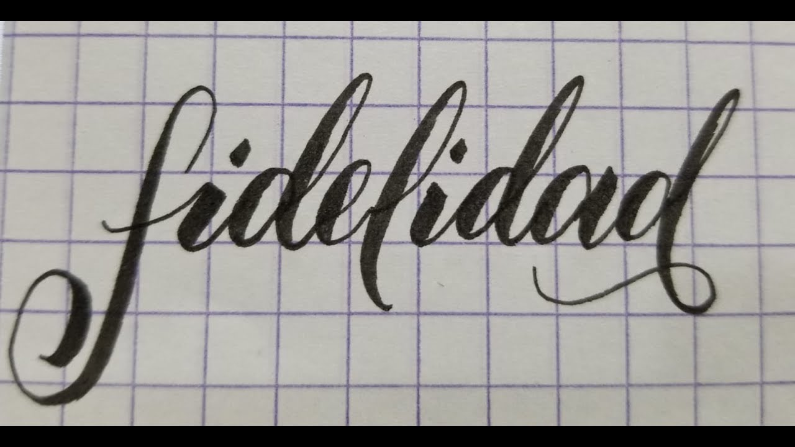

etica
LA MORALIDAD DEL SEXO
¿Qué tiene para decir Dios sobre la sexualidad?

Huir de la fornicación
"pero por fornicacion y toda inmundicia,o varicia, ni aun se nombre entre vosotros"(Hecho.15:29)
haced morir, pues lo terrenal en vosotros:Fornicación, impureza, pasiones desordenadas, malos deseos.
LOS PRINCIPIOS
